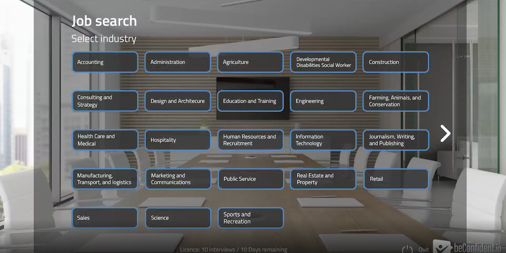
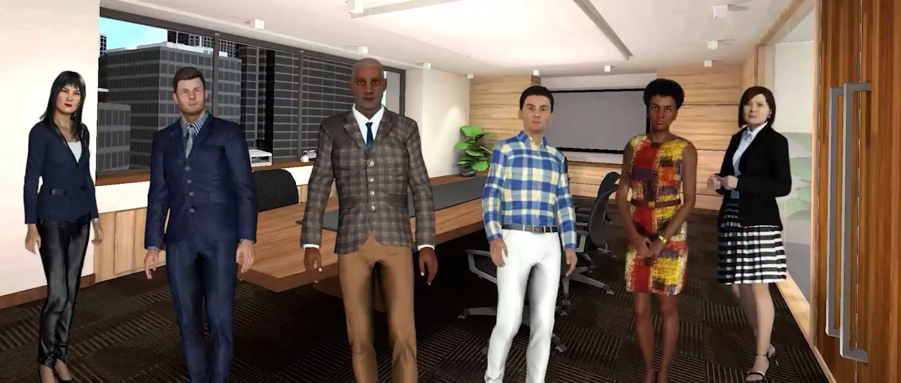
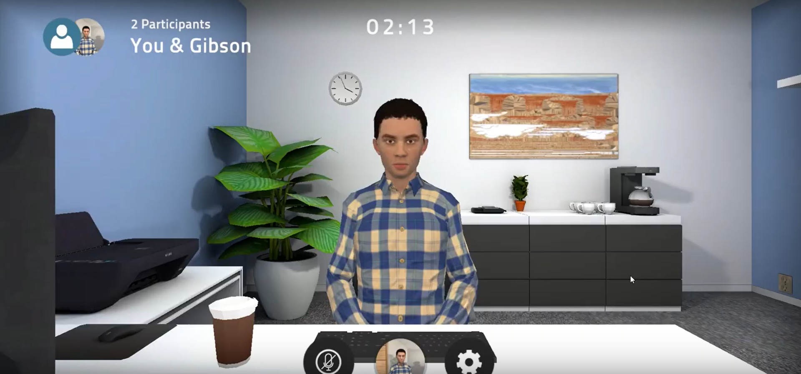
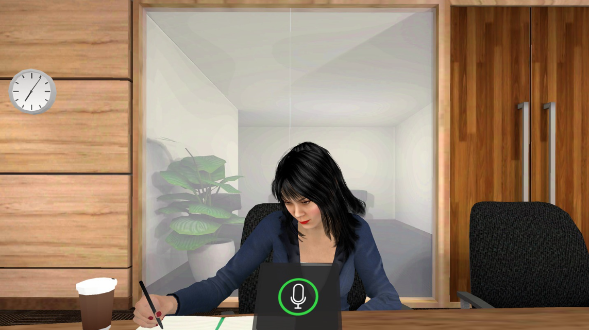

Job Interview Simulations - BeConfident

Practice your interview with AI characters in a job that you are seeking for. Each job has dedicated questions for that job and the questions are different each time.Meta Quest, WebGLC#, JavascriptUnityDec 2019 - presentOriginally Job Interviews Simulations were only developed on the Oculus GO. Now it has been developed for Meta Quest and WebGL. This app is public and being used by schools, immigrants and job seekers One of my proudest projects at Virtro Technology Inc. I had the opportunity to work on this project from the very start. Including whiteboxing, planning meetings, going through multiple alpha and beta versions to productionThe beginning was whiteboxing and trying to find out the best setup for an interview space. One of my coworkers and I put together many interview rooms using cubes to whitebox. After many iterations we came up with 3 interview rooms to useWe wanted the user to interact with different AI interviewers. Working with the backend team, we came up with a way to mix and match the interviewers and the rooms.

In the interview rooms, there are different seating locations at different tables. I came up with a way so that both the player and interviewer would spawn at the correct seating locations no matter how many tables or chairs there are in the scene. I made sure that the implementation worked for both VR and WebGL scenes

While the interviewer is listening to your answers, the interviewer would be performing random animations. Working with one of my co-worker, we came up with a way to randomize the animations for all the characters using the same implementation to avoid repeating code

One of the best parts of this app is that it is data driven. If more jobs are added to this app, we would not need to make additional builds. The lobby - where the user can search for jobs - will search for the new data and display the new jobs. I made sure that pagination is functioning in case more jobs are added then the page can fit. Below is the webgl version of the lobbyBelow is the vr version of the lobbyThis app also has a login so that we can customize the experience for each user. This included entitlements to the app, analytics on their interview, and a transcript for teachers or students to review their performance. I made sure the right stats get sent to the user such as number of questions answered and session time. I also helped with implementing the login scene for both VR and WebGL.An example of what the webgl version of the interview looked like this. As you can see we added a frame to simulate being interviewed online.An example of what the webgl vr version of the interview looked like this.An example of what lobby's webgl version looks like when user is about to select the job they would like to be interviewed forAn example of what lobby's vr version looks like when user is about to select the job they would like to be interviewed forWorking on this app has been very rewarding. Especially seeing that this helped real people. Check out Vancouver Community College Media release
 This app also has a login so that we can customize the experience for each user. This included entitlements to the app, analytics on their interview, and a transcript for teachers or students to review their performance. I made sure the right stats get sent to the user such as number of questions answered and session time. I also helped with implementing the login scene for both VR and WebGL.
This app also has a login so that we can customize the experience for each user. This included entitlements to the app, analytics on their interview, and a transcript for teachers or students to review their performance. I made sure the right stats get sent to the user such as number of questions answered and session time. I also helped with implementing the login scene for both VR and WebGL.
 An example of what the webgl version of the interview looked like this. As you can see we added a frame to simulate being interviewed online.
An example of what the webgl version of the interview looked like this. As you can see we added a frame to simulate being interviewed online.
 An example of what the webgl vr version of the interview looked like this.
An example of what the webgl vr version of the interview looked like this.
 An example of what lobby's webgl version looks like when user is about to select the job they would like to be interviewed for
An example of what lobby's webgl version looks like when user is about to select the job they would like to be interviewed for
 An example of what lobby's vr version looks like when user is about to select the job they would like to be interviewed for
An example of what lobby's vr version looks like when user is about to select the job they would like to be interviewed for
 Working on this app has been very rewarding. Especially seeing that this helped real people. Check out Vancouver Community College Media release
Working on this app has been very rewarding. Especially seeing that this helped real people. Check out Vancouver Community College Media release